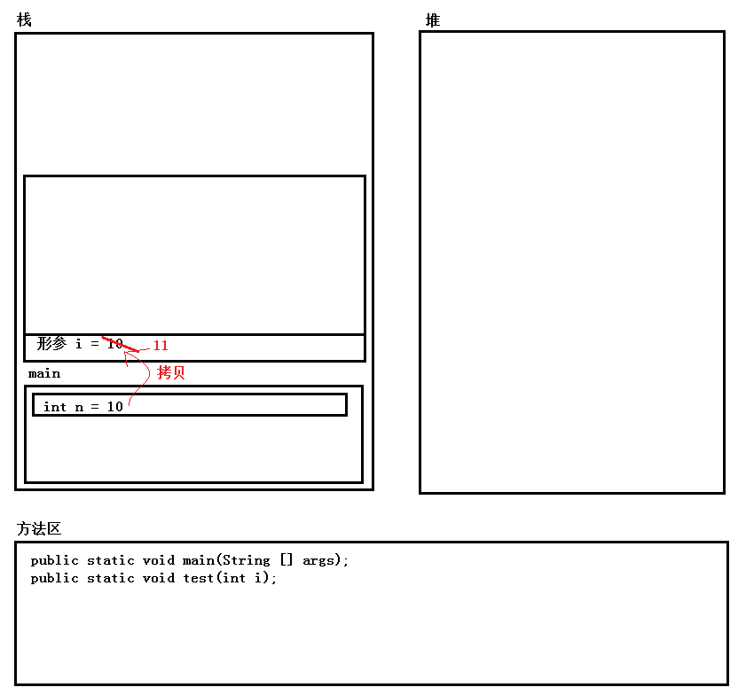
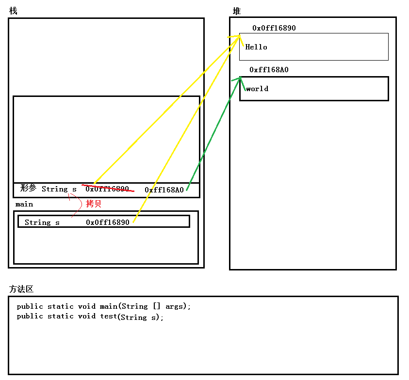
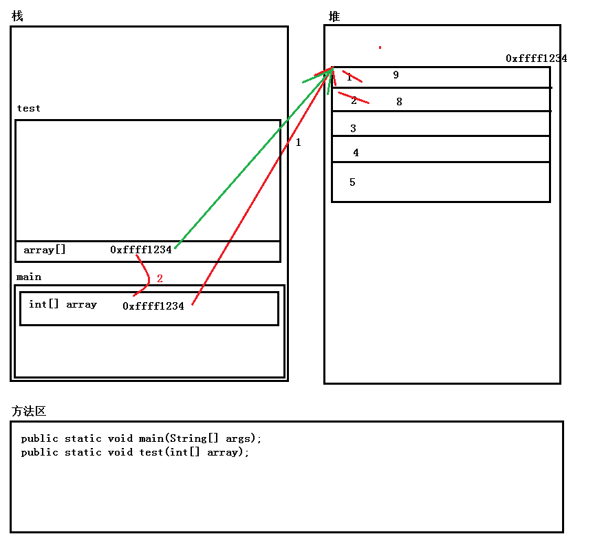
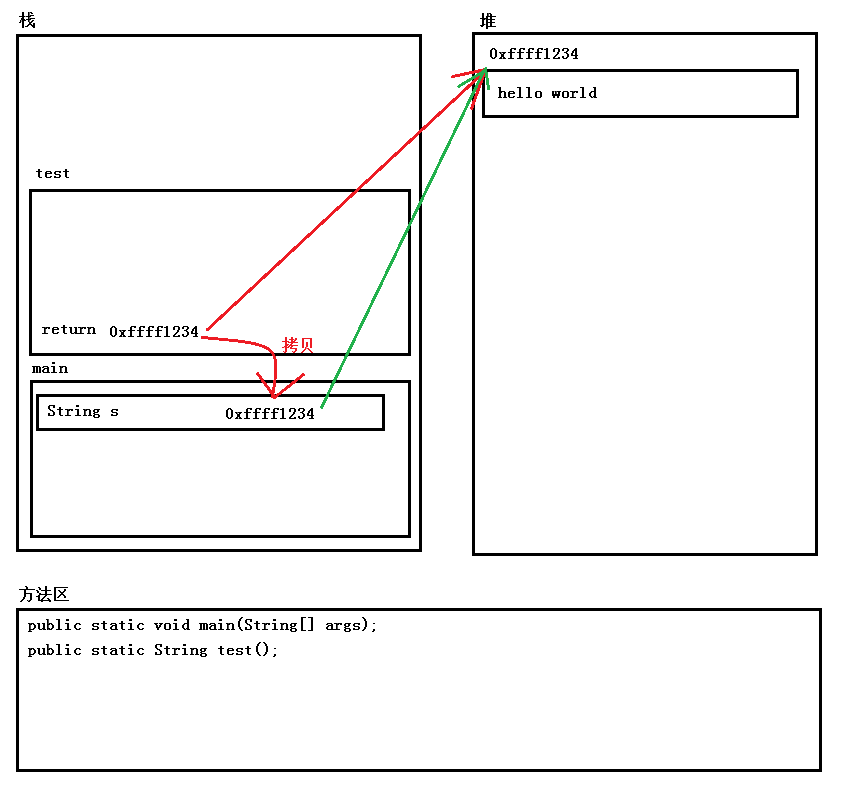

之前的几篇文章中，总结了java中的基本语句和基本数据类型等等一系列的最基本的东西，下面就来说说java中的函数部分
##函数基础
在C/C++中有普通的全局函数、类成员函数和类的静态函数，而java中所有内容都必须定义在类中。所以Java中是没有全局函数的，Java里面只有普通的类成员函数（也叫做成员方法）和静态函数（也叫做静态方法）。这两种东西在理解上与C/C++基本一样，定义的格式分别为:
1 | public static void test(arglist){ |
基本格式为：修饰符 [static] 返回值 函数名称 形参列表
修饰符主要是用来修饰方法的访问限制，比如public 、private等等；如果是静态方法需要加上static 如果是成员方法则不需要；后面是返回值，Java函数可以返回任意类型的值；函数名用来确定一个函数，最后形参列表是传递给函数的参数列表。
函数中的内存分布
Java中函数的使用方式与C/C++中基本相同，这里就不再额外花费篇幅说明它的使用，我想将重点放在函数调用时内存的分配和使用上，更深一层了解java中函数的运行机制。
我们说在X86架构的机器上，每个进程拥有4GB的虚拟地址空间。Java程序也是一个进程，所以它也拥有4GB的虚拟地址空间。每当启动一个Java程序的时候，由Java虚拟机读取.class 文件，然后解释执行其中的二进制字节码。启动java程序时，在进程列表中看到的是一个个的Java虚拟机程序。
java虚拟机在加载.class 文件时将它的4GB的虚拟地址空间划分为5个部分，分别是栈、堆、方法区、本地方法栈、寄存器区。其中重点需要关注前3个部分。
- 栈：与C/C++中栈的作用相同，就是用来保存函数中的局部变量和实参值的。
- 堆：与C/C++中堆的作用相同，用来存储Java中new出来的对象
- 方法区：用来保存方法代码和方法名与地址的这么一张表，类似于C/C++中的函数表
基本数据类型作为函数的参数
1 | class Demo{ |
上述代码在函数中改变了形参值，那么在调用之后n的值会不会发生变化呢？答案是：不会变化，在C/C++中很好理解，形参i只是实参n的一个拷贝，i改变不会改变原来的n。这里我们从内存的角度来回答这个问题

如上图所示，方法区中存储了两个方法的相关信息，main和test，在调用main的时候，首先从方法区中查找main函数的相关信息，然后在栈中进行参数入栈等操作。然后初始化一个局部变量n，接着调用test函数，调用test函数时首先根据方法区中的函数表找到方法对应的代码位置，然后进行栈寄存器的偏移为函数test分配一个栈空间，接着进行参数入栈，这个时候会将n的值——10拷贝到i所在内存中。这个时候在test中修改了i的值，改变的是形参中拷贝的值，与n无关。所以这里n的值不变
引用类型作为函数参数
1 | class Demo{ |
在C/C++中，经常有这么一句话：“按值传递不能改变实参的值，按引用传递可以改变实参的值”，我们知道String 是一个引用，那么这里传递的是String的引用，我们在函数内部改变了s的值，在外部s的值是不是也改变了呢？我们首先估计会打印一个 “Hello”、一个”World”; 实际运行结果却是打印了两个 “Hello”,那么是不是有问题呢？Java中到底存不存在按引用传递呢？为了回答这个问题，我们还是来一张内存图：

从上面的内存图来看，在函数中修改的仍然是形参的值，而对实参的值完全没有影响。如果想做到在函数中修改实参的值，请记住一点：拿到实参的地址，通过地址直接修改内存。
下面再来看一个例子:
1 | class Demo{ |
运行这个实例，可以看到这里它确实改变了，那么这里它发生了什么？跟上面一个字符串的例子相比有什么不同呢？还是来看看内存图

这段代码执行的过程中经历了3个主要步骤:
- new一个数组对象，并且将数组对象的地址赋值给array 实参
- 调用test函数时将array实参中保存的地址复制一份压入函数的参数列表中
- 在test函数中，通过这个地址值来修改对应内存中的内容
这段代码与上面两段本质上的区别在于，这段代码通过引用类型中保存的地址值找到并修改了对应内存中内容，而上面的两段代码仅仅是在修改引用类型这个变量本身的值。
说到传递引用类型，那么我就想到在C/C++中一个经典的漏洞——缓冲区溢出漏洞，那么java程序中是否也存在这个问题呢？这里我准备了这样一段代码:
1 | class Demo{ |
如果是在C/C++中，这段代码可以正常执行只是最后可能会报错或者崩溃，但是赋值是成功的，这也就留给了黑客可利用的空间。
在Java中执行它会发现，它会报一个越界访问的异常，也就说这里赋值是失败的，不能直接往内存里面写，也就不存在这个漏洞了。
返回引用类型
Java方法返回基本类型的情况很简单，也就是将函数返回值放到某块内存中，然后进行一个复制操作。这里重点了解一下它在返回引用类型时与C/C++不同的点
在C/C++中返回一个类对象的时候，会调用拷贝构造将需要返回的类对象拷贝到对应保存类对象的位置，然后针对函数中的类对象调用它的析构函数进行资源回收，那么Java中返回类对象会进行哪些操作？
C/C++中返回一个类对象的指针时，外部需要自己调用delete或者其他操作进行析构。java中的类对象都是引用类型，在函数外部为何不需要额外调用析构呢？带着这些问题，来看下面这段代码：
1 | class Demo{ |
这段代码 不管是用new也好还是直接返回也好，效果其实是一样的，下面是对应的内存分布图

这段代码首先在函数test中new一个对象，此时对应在堆内存中开辟一块空间来保存”hello world” 值，然后保存内存地址在寄存器或者其他某个位置，接着将这个地址值拷贝到main函数中的s中，最后回收test函数的栈空间。
这里实质上是返回了一个堆中的地址值，这里就回答了第一个问题：在返回类对象的时候其实返回的值对象所在的堆内存的地址。
接着来回答第二个问题：java中资源回收依赖与一个引用计数。每当对地址值进行一次拷贝时计数器加一，当回收拷贝值所在内存时计数器减一。这里在返回时，先将地址值保存到某个位置（比如C/C++中是将返回值保存在eax寄存器中）。此时计数器 + 1；然后将这个值拷贝到 main 函数的s变量中，此时计数器的值再 + 1，变为2，接着回收test函数栈空间，计数器 - 1，变为1，在main函数指向完成之后，main的栈空间也被回收，此时计数器 - 1，变为0，此时new出来的对象由Java的垃圾回收器进行回收。